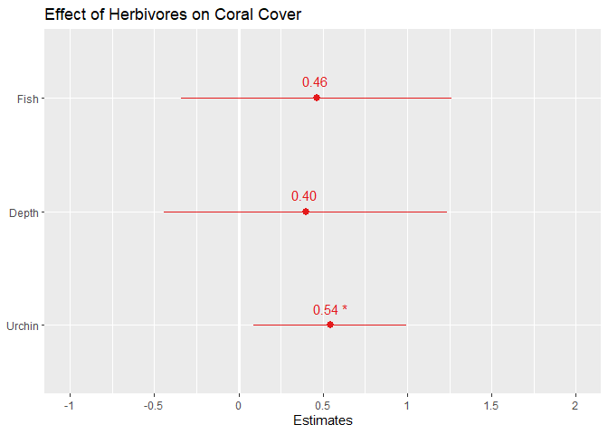

Visualizing Mixed-effects Models
Laura Mudge
2019-04-26
What’s in this document:
Some neat things I’ve learned about when handling mixed-effects models. The focus of these first few examples is how to visualize results of mixed-effects models.
Setup
Data = use the “mixedeff_herbivore.csv” file in the sample_data folder. This is a dataset used to explore the influences of herbivore populations on coral cover.
knitr::opts_chunk$set(echo = TRUE)
library(tidyverse) #for all data wrangling
library(cowplot) #for manuscript ready figures
library(lme4) #for lmer & glmer models## Warning: package 'lme4' was built under R version 3.5.3library(sjPlot) #for plotting lmer and glmer mods## Warning: package 'sjPlot' was built under R version 3.5.3## Warning in checkMatrixPackageVersion(): Package version inconsistency detected.
## TMB was built with Matrix version 1.2.17
## Current Matrix version is 1.2.15
## Please re-install 'TMB' from source using install.packages('TMB', type = 'source') or ask CRAN for a binary version of 'TMB' matching CRAN's 'Matrix' packagelibrary(sjmisc) ## Warning: package 'sjmisc' was built under R version 3.5.3library(effects)## Warning: package 'effects' was built under R version 3.5.3library(sjstats) #use for r2 functions## Warning: package 'sjstats' was built under R version 3.5.3me_data <- read_csv("C:/github/sample_code/sample_data/mixedeff_herbivore.csv")Create a basic mixed-effects model:
I’m not going to walk through the steps to building models (at least not yet), but rather just show an example of a model with coral cover as the response variable (elkhorn_LAI), herbivore populations & depth as fixed effects (c.urchinden, c.fishmass, c.maxD), and survey site as a random effect (site).
.
Note: due to the difference in scale of how the herbivore populations are measured, we are using the centered & scaled values- otherwise models won’t converge. We are also use the log of the response variable. I am subsetting the data based on this specific study. Here we are only using data for when LAI_nonzero==1.
#use the lme4 package
mod <- lme4::lmer(log(elkhorn_LAI) ~ c.urchinden + c.fishmass +c.maxD + (1|site), REML= FALSE, data= subset(me_data, LAI_nonzero ==1))## boundary (singular) fit: see ?isSingularsummary(mod)## Linear mixed model fit by maximum likelihood ['lmerMod']
## Formula: log(elkhorn_LAI) ~ c.urchinden + c.fishmass + c.maxD + (1 | site)
## Data: subset(me_data, LAI_nonzero == 1)
##
## AIC BIC logLik deviance df.resid
## 116.3 125.1 -52.1 104.3 26
##
## Scaled residuals:
## Min 1Q Median 3Q Max
## -1.7501 -0.6725 -0.1219 0.6223 1.7882
##
## Random effects:
## Groups Name Variance Std.Dev.
## site (Intercept) 0.000 0.000
## Residual 1.522 1.234
## Number of obs: 32, groups: site, 9
##
## Fixed effects:
## Estimate Std. Error t value
## (Intercept) 10.1272 0.2670 37.929
## c.urchinden 0.5414 0.2303 2.351
## c.fishmass 0.4624 0.4090 1.130
## c.maxD 0.3989 0.4286 0.931
##
## Correlation of Fixed Effects:
## (Intr) c.rchn c.fshm
## c.urchinden 0.036
## c.fishmass -0.193 0.020
## c.maxD 0.511 0.491 -0.431
## convergence code: 0
## boundary (singular) fit: see ?isSingularMake a plot of the effect sizes:
This would definitely be useful if you have a lot of fixed effects!
Unformatted plot of effect sizes
sjPlot::plot_model(mod)## Computing p-values via Wald-statistics approximation (treating t as Wald z).
Formatted plot of effect sizes:
Let’s change the axis labels & title. Type ?plot_model into your console to see details of ALL the features you can adjust.
# Notes: axis labels should be in order from bottom to top.
# To see the values of the effect size and p-value, set show.values and show.p= TRUE. Pvalues will only be shown if the effect size values are too
sjPlot::plot_model(mod,
axis.labels=c("Urchin", "Depth", "Fish"),
show.values=TRUE, show.p=TRUE,
title="Effect of Herbivores on Coral Cover")## Computing p-values via Wald-statistics approximation (treating t as Wald z).
Table output of model results:
There’s a neat feature of sjPlot that also creates nice tables of model summary outputs. This will give you the predictor variables included, their estimates, confidence intervals, p-values for estimates, and random effects information. Type ?tab_model in your console to see all the features you can adjust.
Unformatted table
sjPlot:: tab_model(mod)## Computing p-values via Wald-statistics approximation (treating t as Wald z).| log(elkhorn LAI) | |||
|---|---|---|---|
| Predictors | Estimates | CI | p |
| (Intercept) | 10.13 | 9.60 – 10.65 | <0.001 |
| c urchinden | 0.54 | 0.09 – 0.99 | 0.019 |
| c fishmass | 0.46 | -0.34 – 1.26 | 0.258 |
| c max D | 0.40 | -0.44 – 1.24 | 0.352 |
| Random Effects | |||
| σ2 | 1.52 | ||
| τ00 site | 0.00 | ||
| ICC site | 0.00 | ||
| Observations | 32 | ||
Formatted table
# Notes: predictor labels (pred.labels) should be listed from top to bottom; dv.labels= the name of the response variable that will be at the top of the table.
sjPlot::tab_model(mod,
show.re.var= TRUE,
pred.labels =c("(Intercept)", "Urchins", "Fish", "Depth"),
dv.labels= "Effects of Herbivores on Coral Cover")## Computing p-values via Wald-statistics approximation (treating t as Wald z).| Effects of Herbivores on Coral Cover | |||
|---|---|---|---|
| Predictors | Estimates | CI | p |
| (Intercept) | 10.13 | 9.60 – 10.65 | <0.001 |
| Urchins | 0.54 | 0.09 – 0.99 | 0.019 |
| Fish | 0.46 | -0.34 – 1.26 | 0.258 |
| Depth | 0.40 | -0.44 – 1.24 | 0.352 |
| Random Effects | |||
| σ2 | 1.52 | ||
| τ00 site | 0.00 | ||
| ICC site | 0.00 | ||
| Observations | 32 | ||
Plot model estimates WITH data
Using the ‘effects’ and ‘ggplot2’ packages, we can plot the model estimates on top of the actual data! We do this for one variable at a time. Note: the urchin data was scaled & centered for use in the model, so we are plotting the scaled and centered data values NOT the raw data (ie urchin density)
Step 1: Save the effect size estimates into a data.frame
# Use the effects package --> effect function. term= the fixed effect you want to get data on, mod= name of your model.
effects_urchin <- effects::effect(term= "c.urchinden", mod= mod)
summary(effects_urchin) #output of what the values are##
## c.urchinden effect
## c.urchinden
## -0.7 0.4 2 3 4
## 9.53159 10.12715 10.99342 11.53484 12.07626
##
## Lower 95 Percent Confidence Limits
## c.urchinden
## -0.7 0.4 2 3 4
## 8.857169 9.680160 10.104459 10.216537 10.306881
##
## Upper 95 Percent Confidence Limits
## c.urchinden
## -0.7 0.4 2 3 4
## 10.20601 10.57414 11.88238 12.85314 13.84563# Save the effects values as a df:
x_urch <- as.data.frame(effects_urchin)Step 2: Use the effects value df (created above) to plot the estimates
You can break this up into separate steps if you wish to save a base plot (of your fixed effect & response var data only). Note: for the plot, I am subsetting the data based on this specific study. Here we are only using data for when LAI_nonzero==1.
#Basic steps:
#1 Create empty plot
#2 Add geom_points() from the DATA: urchin data on the x axis (independent va= c.urchinden) and coral data on the y-axis (response var= elkhorn_LAI)
#3 Add geom_point for the MODEL estimates (data= x_urchi here, this is the dataset you created in the above chunk). We will change the color so they are distinguishable from the data
#4 Add geom_line for the MODEL estimates. Change the color to match the estimate points (ie whatever color you chose for step3)
#5 Add geom_ribbon that has the CI limits for the model estimates
#6 Edit the labels as you see fit!
#1
urchin_plot <- ggplot() +
#2
geom_point(data=subset(me_data, LAI_nonzero==1), aes(c.urchinden, log(elkhorn_LAI))) +
#3
geom_point(data=x_urch, aes(x=c.urchinden, y=fit), color="blue") +
#4
geom_line(data=x_urch, aes(x=c.urchinden, y=fit), color="blue") +
#5
geom_ribbon(data= x_urch, aes(x=c.urchinden, ymin=lower, ymax=upper), alpha= 0.3, fill="blue") +
#6
labs(x="Urchins (centered & scaled)", y="Coral Cover")
urchin_plot